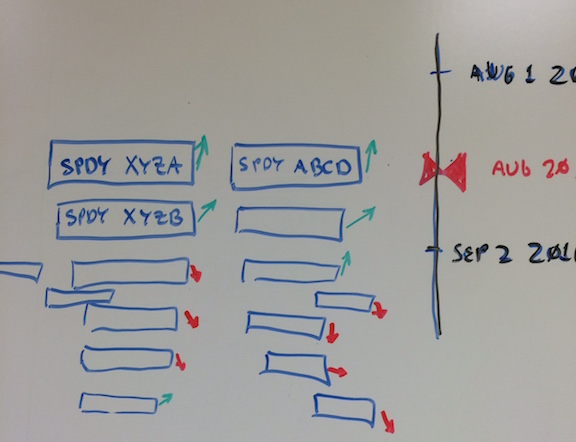
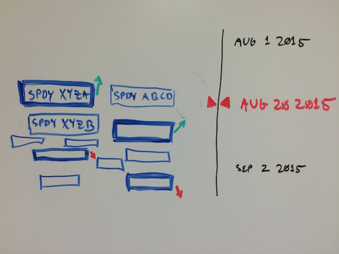

The first visualization is meant to show the overall risk profile of examined profile at some moment in time. The slider on the right is an "Apple Time Machine" selector. You use it to pick your portfolio/position as of the chosen date, a la "terms." 
The size of the option/stock is getting smaller as the time extends into the future.
The angle on the dial corresponds to risk relative to the portfolio as of the time picked in slider. 90° and green means that instrument is offsetting a lot of risk. -90° and red means that instrument is very risky. Keep in mind, the risk is relative to the portfolio as it exists at the chosen time.The second visualization shows what happens when you click on an instrument. That instrument gets highlighted, and so do instruments that relate to the one clicked on. So, if you click on an option for AAPL that was high in risky delta, you might see AAPL stocks in your portfolio that would offset that risk highlighted along with that option. 